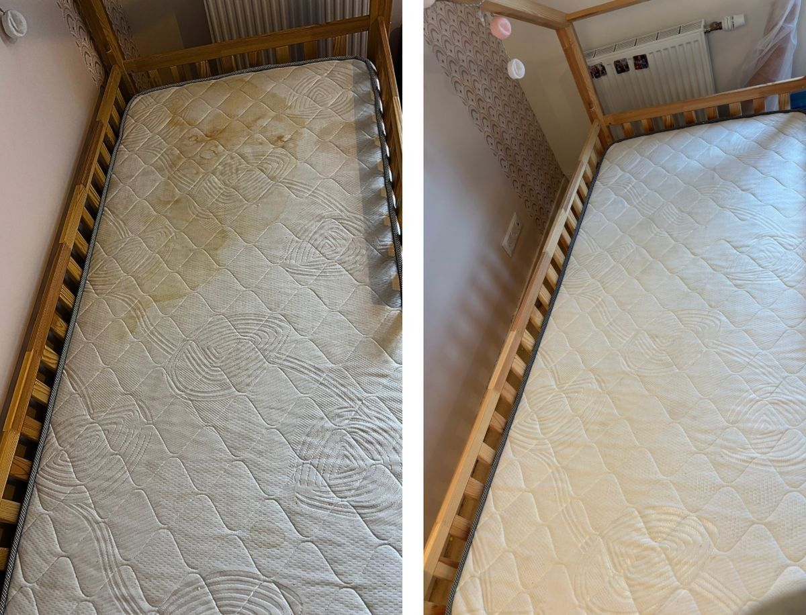

Nettoyage de matelas à domicile.
À partir de 70 € après crédit d'impôt. Transpiration, acariens, auréoles : l'injection-extraction retire ce qu'un aspirateur ne peut pas atteindre, sans détremper la mousse.
Notre approche
On passe un tiers de sa vie sur son matelas. Aspiration profonde, traitement de chaque auréole selon son origine, désinfection sur toute la surface puis rinçage par injection-extraction. La mousse reste humide, jamais détrempée : vous dormez dessus le soir même si j'interviens le matin.
Ce qu'un matelas accumule.
Transpiration
Près d'un demi-litre par nuit. Tout finit dans la mousse, et les auréoles jaunes suivent.
Acariens et allergènes
Ils se logent dans les fibres profondes. L'extraction en élimine une grande partie.
Accidents d'enfants
Pipi au lit, régurgitations, biberons renversés. Traités et désinfectés, odeur comprise.
Odeurs de renfermé
Matelas stocké, chambre peu aérée, humidité. On retire la cause, on ne la parfume pas.
En quatre étapes.
Aspiration profonde
Première passe pour retirer poussières, peaux mortes et poils avant toute humidification.
Traitement des taches
Chaque auréole est traitée avec le produit adapté à son origine, puis brossée.
Désinfection
Produit professionnel sur toute la surface, efficace sur les acariens et les bactéries.
Injection-extraction
Rinçage à l'eau claire et réaspiration immédiate. Humide, jamais détrempé.
Un prix ferme, annoncé avant de commencer.
Tarif de départ pour un matelas une place. Comptez un supplément pour un deux places ou un matelas à traiter sur les deux faces. Prix confirmé sur devis avant l'intervention.
Après crédit d'impôt de 50 %. Désinfection comprise.
La différence se voit.

Quand faire nettoyer son matelas ?
- Une fois par an, pour que la transpiration ne s'installe pas en profondeur
- Après un accident : plus on intervient tôt, plus le résultat est complet
- En cas d'allergies : un passage par an change le quotidien
- Avant d'emménager ou avant la première nuit dans un meublé
- Après une maladie, avant de reprendre son lit
Ce que je ne peux pas promettre.
L'extraction retire beaucoup, mais pas tout. Autant être clair avant l'intervention.
- Une auréole ancienne et jaunie s'éclaircit sans toujours disparaître : l'urine ou la transpiration ont modifié la fibre.
- Les acariens sont fortement réduits, jamais éliminés définitivement. Ils reviennent avec le temps.
- Un matelas à ressorts très ancien peut garder une odeur venant de sa structure interne, hors d'atteinte.
- Je ne traite ni les matelas déchirés ni ceux dont le coutil est perforé : l'eau entrerait sans ressortir.
Comme toujours, je vous donne mon avis honnête avant de commencer, pas après.
Où j'interviens
Je me déplace dans tout le Val-d'Oise, en Île-de-France et dans le sud de l'Oise. Le déplacement est compris dans le prix annoncé.
Taverny, Franconville, Ermont, Beauchamp, Saint-Leu-la-Forêt, Montmorency, Eaubonne, Domont, Sarcelles, Argenteuil, Cergy, Pontoise, Saint-Ouen-l'Aumône, L'Isle-Adam, Beaumont-sur-Oise, Persan, Chantilly et les communes alentour.
Nos autres prestations
Le même soin pour vos vitres et vos autres textiles, le même jour si vous le souhaitez.
Ce qu'on nous demande le plus
Je peux dormir dessus le soir même ?
Oui, si j'interviens le matin. Comptez 4 à 6 heures de séchage dans une pièce aérée.
Vous traitez les deux faces ?
Sur demande. Le plus souvent, seule la face du dessus a besoin d'être traitée.
Est-ce que ça élimine vraiment les acariens ?
L'extraction et la désinfection en retirent une grande partie, mais aucun professionnel honnête ne vous promettra une élimination totale et définitive : ils reviennent avec le temps. Un passage par an fait une vraie différence.
Comment fonctionne le crédit d'impôt ?
Vous réglez la facture, puis 50 % vous sont rendus par l'État au titre des services à la personne. Avec l'avance immédiate, la réduction est appliquée tout de suite : vous ne sortez que la moitié.

Retrouvez un matelas sain.
Envoyez une ou deux photos et les dimensions : Jensen vous répond sous 24 heures avec un prix ferme. Gratuit et sans engagement.
- Zone
- Val-d'Oise et toute l'Île-de-France, jusqu'au sud de l'Oise
- Disponibilité
- Joignable 7/7 · Interventions du lundi au samedi, créneaux en soirée possibles
- Téléphone
- 06 99 14 25 08